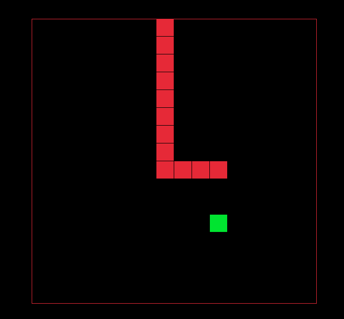
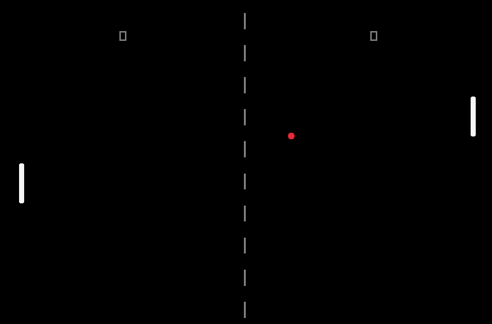
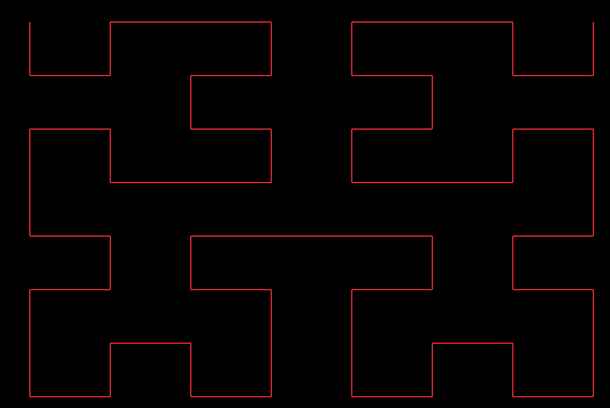
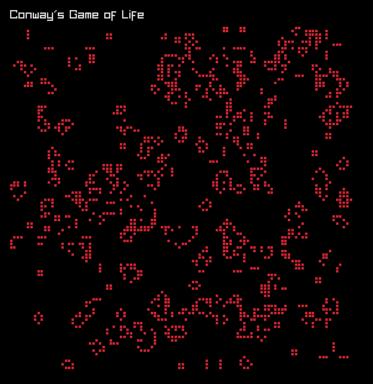
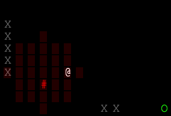
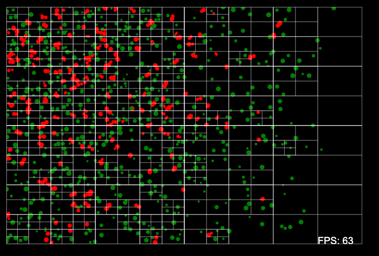
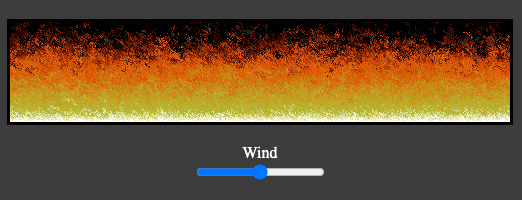

C++
|  |
Snake
An implementation of Snake with raylib. The only rule I had for this was that I couldn't use a linked list. The code is on Github. |
|  |
Pong
An implementation of Pong with raylib. I did an object oriented implementation with scenes. The final result isn't that compelling and, ultimately, unnecessary, but it was interesting to try out. The code is on Github. |
|  |
Hilbert Curves
A visualization of Hilbert curves with raylib. The code is on Github. |
|  |
Conway's Game of Life
A simulation of Conway's Game of Life with raylib. The code is on Github. |
TypeScript
|  |
DungeonGrams
This is an implementation of DungeonGrams. It was originally written in Python for one of my papers by my PhD advisor, Seth Cooper. Several versions of the game were made, but this one is, in my opinion, the best. Previous iterations were not very user friendly. This version includes a tutorial and some helpful indicators for when an enemy is going to come after you. The code is on Github. |

|
Sisyphus's Dungeon
(Active Development) This is a game that is a work in progress, so no guarantee that everything is correctly functioning or that it's fun. It is a roguelike developed in Typescript and rot.js for rendering. The code is on Github. |

|
Match Three
(Active Development) Someone brought up match three games with me at AIIDE 2023, and I realized that I had never made one of those games. So, I made one. It isn't perfect, it definitely could use a lot of user experience improvements, but I've enjoyed working on it. The assets are not my own. The code is on Github. NOTE: version online is currently broken. |
|  |
Quad Tree Example
I had an idea for a game that I wanted to implement and it was going to have a lot of entities colliding with each other. So, I figured it would be a good idea to build a working quad tree. I never ended up working on the game that the quad tree was meant for, because I decided to focus on getting my dissertation done. The code is on Github. |
|  |
Doom Fire Simulation
This isn't an original project. It also isn't a game. It's just a simple animation from Doom. I followed a tutorial that was used in a class that I TA'd. I added wind for fun. I found that putImageData
is pretty slow, which is why the canvas is small. The code is available on
GitHub.
|

|
Rock-Paper-Scissors Shoot
So, this is a bit stupid, but I love this game. You play rock-paper-scissors against a backoff n-gram. That's all there is to it. The code is available on GitHub. |

|
Tic-Tac-Toe
My first TypeScript game. You play as X against a minimax implementation. It should be impossible for you to win unless I made a mistake. The code is available on GitHub. |

|
Maze Game
I wrote this to get familiar with drawing on a browser's canvas. Mazes are generated that are guaranteed to be solvable with a random walk. The code is available on GitHub. |
Rust

|
Connect-Four
This is an implementation of Connect-Four in Rust with Macroquad. I got fairly into the optimization side of things with bitboards and got it running pretty fast locally. Unfortunately, the WASM version isn't fast enough to run the impossible version of the AI, but you can run that locally. The code is available on GitHub. |

|
Pong
This is an implementation of Pong in Rust with Macroquad. The code is available on GitHub. |